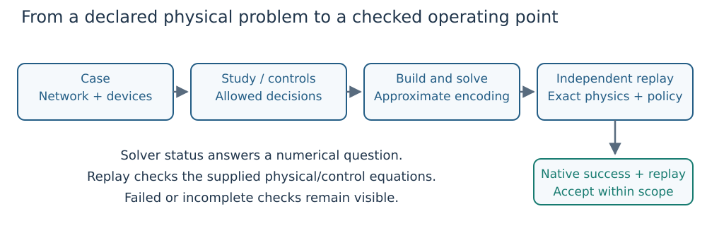

DroopOPF.jl
Find a steady-state AC operating point that respects the network and its reactive controls; then check that point independently. DroopOPF supports optimal power flow (OPF), shared Volt/VAR design and security-constrained OPF (SCOPF).

Figure 1. A numerical solve produces a candidate. Acceptance also needs independent replay of the exact network, control laws, device limits and declared policy.
Learn with one small network
- Install and run: set up Julia and choose a learning path.
- Understand the problem: distinguish dispatch, automatic response and controller design before choosing an API.
- Build your first OPF: a complete two-bus example, executed when these docs build, from device data to a deliberately corrupted result.
- Read a Volt/VAR curve: work through deadband, slope and saturation.
- Follow AC power through a branch: current directions, taps, shunts, per-unit bases and nodal balance.
- Solve a security study: execute a complete two-outage example and reject injection from a failed generator.
- Add security or time: understand what is shared and what changes across outages, demand samples and chronological periods.
Notation and units defines the mathematical symbols and their code counterparts. Individual teaching pages also define symbols where they first appear. All examples use a balanced, positive-sequence AC model. An equilibrium or an hourly schedule is not a transient-stability or device-switching trajectory assessment.
Find the guide for your task
| Your question | Start here | Detailed reference |
|---|---|---|
| How do I assemble network and control data? | First OPF | Data model, PSS/E import |
| Why does reactive output change with voltage? | Volt/VAR tutorial | Mixed AVR/droop |
| Which controls may change after an outage? | Study workflows | SCOPF policy |
| How do I choose one curve for many conditions? | Design versus response | Droop optimization, contingency addition |
| How are demand samples different from time periods? | Scenario/time diagram | Multi-period model |
| Can I trust this result? | Validation | Feasibility, robustness |
| Which model features are supported? | Supported scope | API reference |
Implementation reference
Use the API for signatures, supported scope for model limitations and development guide to build or test the package. The teaching structure takes inspiration from the concept primers, executed examples and validation guidance in BMOPFTools.jl.